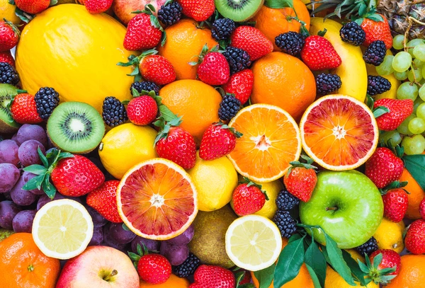
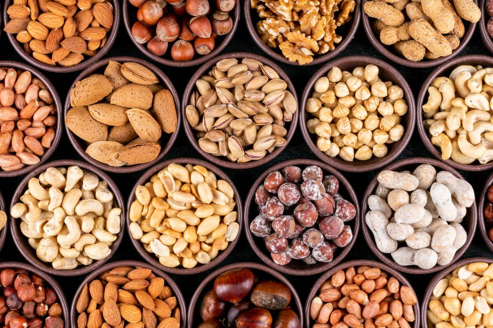
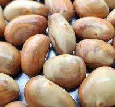
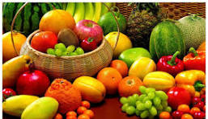

MAKAN SEHAT
Makanan yang sehat
Manfaat Makanan Sehat Bagi Tubuh:
- Mempertahankan Berat Badan yang Sehat.
- Meningkatkan Energi dan Daya Tahan Tubuh.
- Memperkuat Sistem Kekebalan Tubuh.
- Meningkatkan Kualitas Tidur.
- Membentuk Kebiasaan Makan Sehat Sejak Dini.
- Meningkatkan Kualitas Hidup Keluarga.
- Menjaga Berat Badan Anak yang Sehat.
KACANG KACANGAN
Kacang mengandung serat larut dan tidak larut. Sehingga, mereka bekerja ganda untuk menjaga sistem pencernaan Anda berjalan lancar. Yang pertama melambat pencernaan, yang memberi Anda perasaan kenyang dan yang kedua membantu mencegah sembelit.
SAYURAN

Setiap orang dewasa setidaknya perlu mengonsumsi sekitar 400 gram atau 2,5 cangkir sayuran setiap harinya. Sebab, sayur mengandung berbagai nutrisi penting tubuh butuhkan, termasuk serat, karoten, vitamin A, vitamin C, dan fosfor.
CONTOH MAKANAN SEHAT LAINNYA
BIJI BIJIAN
BUAH BUAHAN